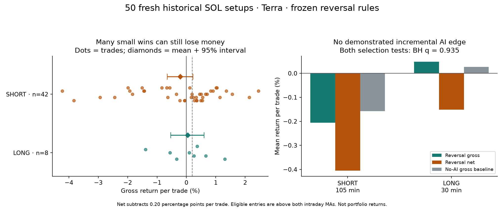

COMPLETED ·50/50 isolated decisions · September 29, 2026
Neither reversal rule establishes a profitable edge
Terra chose LONG42 times and SHORT8 times. Reversing those calls produced29/50gross winners but averaged −0.165% gross and−0.365% net per trade. The short rule failed to reproduce its discovery result; the long rule had just8 signals and did not cover costs. Neither AI-selection test distinguished the rule from its no-AI baseline.
50 total new historical SOL setups, chosen randomly from entries above both intraday MA20/MA50. Reverse AI LONG→SHORT and exit105 minutes; reverse AI SHORT→LONG and exit30 minutes. Rules/model/sample frozen before decisions and outcomes. Each entry is at least122 hours from previously used entries and other new entries. This is a fresh-to-experiment historical test, not live or chronological holdout evidence.
Idea archive · Frozen protocol · Findings · All 50 trade rows · Original AI ledger · Full statistics · Verification · Export figure

Frozen primary results
| Rule | Trades | Gross wins | Net wins | Mean gross | Mean net | Median gross | 95% CI: mean gross | AI-selection q |
|---|---|---|---|---|---|---|---|---|
| H-SHORT | 42 | 24/42 (57.1%) | 21/42 | -0.205% | -0.405% | +0.210% | -0.653% to +0.220% | 0.935 |
| H-LONG | 8 | 5/8 (62.5%) | 4/8 | +0.049% | -0.151% | +0.173% | -0.533% to +0.602% | 0.935 |
Gross/net are arithmetic per-trade returns. Net subtracts0.20 percentage points (20 bps) roundtrip;50% of trades are net-positive in each group. No compounding/leverage claim. Both gross 95% intervals cross zero. The AI-selection test shuffles long/short labels across all 50 windows, preserving counts; q adjusts the two primary tests.
What the AI opinion added
| No-AI policy on all 50 | Gross wins | Mean gross | Mean net |
|---|---|---|---|
| long_30m | 21/50 | +0.027% | -0.173% |
| short_30m | 29/50 | -0.027% | -0.227% |
| long_105m | 21/50 | +0.157% | -0.043% |
| short_105m | 29/50 | -0.157% | -0.357% |
Relative to the matching side/horizon baseline, AI selection changed SHORT mean by −0.048percentage points and LONG mean by +0.022points. Two-sided permutation p=0.586 and 0.935; BH q=0.935 for both. No demonstrated incremental AI contribution.
| Rule | Same-AI-side gross | Same-AI-side net | Next-open reversal gross | Next-open reversal net | Earlier half gross | Later half gross |
|---|---|---|---|---|---|---|
| H-SHORT | +0.205% | +0.005% | -0.200% | -0.400% | +0.012% | -0.423% |
| H-LONG | -0.049% | -0.249% | +0.050% | -0.150% | +0.268% | -0.170% |
Earlier/later means split each triggered group chronologically:21/21 short trades and4/4 long trades. Next-open sensitivity uses the next1-minute bar open with the same exit clock. Primary entry ignores inference latency; sensitivity does not simulate latency.
Why a majority of wins did not mean profit
| Rule | Mean winning trade | Mean losing trade | Worst | Best |
|---|---|---|---|---|
| H-LONG | +0.536% | -0.764% | -1.395% | +1.310% |
| H-SHORT | +0.764% | -1.498% | -4.228% | +2.455% |
Terra's 84% LONG preference is conditional on an already bullish intraday-MA sample. Directional bias does not by itself imply an exploitable error. Large losing reversal trades outweighed the more frequent small wins. The original AI bracket trades separately had 18 TP/32 SL, averaging+0.068% gross/−0.132% net; they are not this reversal policy.
10,000 whole-window bootstrap draws, seed 2026092902. One bootstrap draw contained no long signals and is excluded from that subgroup's interval. Regime dependence can remain despite nonoverlapping histories/futures. Costs exclude funding, borrow and market impact. Exploratory prior rule/model selection and small groups limit generalization.
All 50 trades and saved model explanations
01 · 02 · 03 · 04 · 05 · 06 · 07 · 08 · 09 · 10 · 11 · 12 · 13 · 14 · 15 · 16 · 17 · 18 · 19 · 20 · 21 · 22 · 23 · 24 · 25 · 26 · 27 · 28 · 29 · 30 · 31 · 32 · 33 · 34 · 35 · 36 · 37 · 38 · 39 · 40 · 41 · 42 · 43 · 44 · 45 · 46 · 47 · 48 · 49 · 50
Case 01 · H-LONG
Private research metadata: SOL-USD · Entry 2022-11-28 19:45:00 UTC · Exit 2022-11-28 20:15:00 UTC · d1e6de374b
| AI side → reversal | Hold | Entry → exit | Gross / net | Max favorable / adverse | Positive minute closes | Original AI bracket |
|---|---|---|---|---|---|---|
| short → long | 30 min | 13.402 → 13.357 | -0.336% / -0.536% | +0.015% / -0.642% | 0 / 30 | sl · -1.200% gross · 395 min |
Saved model explanation: Failed high-volume breakout, lower highs, and current bounce reaches resistance near 100. Confidence 58%; original SL 1.20%, TP 2.40%.
Case 02 · H-SHORT
Private research metadata: SOL-USD · Entry 2024-11-05 19:30:00 UTC · Exit 2024-11-05 21:15:00 UTC · 4ee8987cca
| AI side → reversal | Hold | Entry → exit | Gross / net | Max favorable / adverse | Positive minute closes | Original AI bracket |
|---|---|---|---|---|---|---|
| long → short | 105 min | 167 → 166.55 | +0.269% / +0.069% | +2.317% / -0.036% | 105 / 105 | sl · -0.700% gross · 21 min |
Saved model explanation: Price holds MA20 after pullback; broader trend and higher lows favor continuation. Confidence 61%; original SL 0.70%, TP 1.40%.
Case 03 · H-SHORT
Private research metadata: SOL-USD · Entry 2024-05-10 09:00:00 UTC · Exit 2024-05-10 10:45:00 UTC · 3422031093
| AI side → reversal | Hold | Entry → exit | Gross / net | Max favorable / adverse | Positive minute closes | Original AI bracket |
|---|---|---|---|---|---|---|
| long → short | 105 min | 153.989 → 153.736 | +0.164% / -0.036% | +0.552% / -0.382% | 90 / 105 | sl · -0.650% gross · 137 min |
Saved model explanation: Price holds above rising averages after pullback; consolidation near 100 favors continuation. Confidence 58%; original SL 0.65%, TP 1.30%.
Case 04 · H-SHORT
Private research metadata: SOL-USD · Entry 2023-05-29 02:00:00 UTC · Exit 2023-05-29 03:45:00 UTC · 34d568dbfd
| AI side → reversal | Hold | Entry → exit | Gross / net | Max favorable / adverse | Positive minute closes | Original AI bracket |
|---|---|---|---|---|---|---|
| long → short | 105 min | 20.878 → 20.784 | +0.450% / +0.250% | +0.680% / -0.105% | 102 / 105 | sl · -0.650% gross · 86 min |
Saved model explanation: Price holds rising MA20 after consolidation; upside target remains reachable despite low-volume indecision. Confidence 56%; original SL 0.65%, TP 1.30%.
Case 05 · H-LONG
Private research metadata: SOL-USD · Entry 2023-03-14 14:45:00 UTC · Exit 2023-03-14 15:15:00 UTC · b1570deca0
| AI side → reversal | Hold | Entry → exit | Gross / net | Max favorable / adverse | Positive minute closes | Original AI bracket |
|---|---|---|---|---|---|---|
| short → long | 30 min | 21.735 → 21.878 | +0.658% / +0.458% | +1.919% / -0.331% | 30 / 30 | sl · -1.700% gross · 10 min |
Saved model explanation: Breakout momentum is fading under repeated 101.3 resistance; current bearish rejection favors short-term pullback. Confidence 56%; original SL 1.70%, TP 3.40%.
Case 06 · H-SHORT
Private research metadata: SOL-USD · Entry 2022-10-04 05:15:00 UTC · Exit 2022-10-04 07:00:00 UTC · 2ee2807f56
| AI side → reversal | Hold | Entry → exit | Gross / net | Max favorable / adverse | Positive minute closes | Original AI bracket |
|---|---|---|---|---|---|---|
| long → short | 105 min | 33.1 → 33.58 | -1.450% / -1.650% | +0.332% / -1.571% | 59 / 105 | tp · +0.900% gross · 81 min |
Saved model explanation: Price regained both rising averages; current bullish recovery favors upside continuation despite nearby resistance. Confidence 58%; original SL 0.45%, TP 0.90%.
Case 07 · H-LONG
Private research metadata: SOL-USD · Entry 2021-08-07 04:15:00 UTC · Exit 2021-08-07 04:45:00 UTC · 4789acbacc
| AI side → reversal | Hold | Entry → exit | Gross / net | Max favorable / adverse | Positive minute closes | Original AI bracket |
|---|---|---|---|---|---|---|
| short → long | 30 min | 39.87 → 39.646 | -0.562% / -0.762% | +0.208% / -0.838% | 3 / 30 | tp · +1.800% gross · 141 min |
Saved model explanation: Rejection from 100.8 resistance after weak-volume range; downside mean reversion favored. Confidence 56%; original SL 0.90%, TP 1.80%.
Case 08 · H-SHORT
Private research metadata: SOL-USD · Entry 2025-01-13 22:15:00 UTC · Exit 2025-01-14 00:00:00 UTC · 62c86e4e07
| AI side → reversal | Hold | Entry → exit | Gross / net | Max favorable / adverse | Positive minute closes | Original AI bracket |
|---|---|---|---|---|---|---|
| long → short | 105 min | 182.99 → 182.78 | +0.115% / -0.085% | +0.803% / -0.393% | 60 / 105 | tp · +2.700% gross · 670 min |
Saved model explanation: Breakout above consolidation with rising momentum and price firmly above both moving averages. Confidence 62%; original SL 1.35%, TP 2.70%.
Case 09 · H-SHORT
Private research metadata: SOL-USD · Entry 2022-09-04 06:00:00 UTC · Exit 2022-09-04 07:45:00 UTC · f211632e44
| AI side → reversal | Hold | Entry → exit | Gross / net | Max favorable / adverse | Positive minute closes | Original AI bracket |
|---|---|---|---|---|---|---|
| long → short | 105 min | 31.42 → 31.25 | +0.541% / +0.341% | +0.796% / -0.159% | 84 / 105 | sl · -0.550% gross · 35 min |
Saved model explanation: Uptrend remains intact above rising averages; shallow pullback on subdued volume favors continuation. Confidence 57%; original SL 0.55%, TP 1.10%.
Case 10 · H-SHORT
Private research metadata: SOL-USD · Entry 2022-07-02 21:15:00 UTC · Exit 2022-07-02 23:00:00 UTC · b9721fc71c
| AI side → reversal | Hold | Entry → exit | Gross / net | Max favorable / adverse | Positive minute closes | Original AI bracket |
|---|---|---|---|---|---|---|
| long → short | 105 min | 33.26 → 33.47 | -0.631% / -0.831% | +0.331% / -2.676% | 25 / 105 | tp · +1.700% gross · 41 min |
Saved model explanation: Bullish breakout closes at resistance with price above rising MA20 and MA50. Confidence 57%; original SL 0.85%, TP 1.70%.
Case 11 · H-SHORT
Private research metadata: SOL-USD · Entry 2025-06-21 09:45:00 UTC · Exit 2025-06-21 11:30:00 UTC · 60a6834367
| AI side → reversal | Hold | Entry → exit | Gross / net | Max favorable / adverse | Positive minute closes | Original AI bracket |
|---|---|---|---|---|---|---|
| long → short | 105 min | 141.73 → 142.21 | -0.339% / -0.539% | +0.120% / -0.564% | 7 / 105 | sl · -0.550% gross · 240 min |
Saved model explanation: Price holds above rising moving averages after higher-high momentum; stop sits below recent breakout support. Confidence 61%; original SL 0.55%, TP 1.10%.
Case 12 · H-SHORT
Private research metadata: SOL-USD · Entry 2021-01-27 21:00:00 UTC · Exit 2021-01-27 22:45:00 UTC · 45bca70249
| AI side → reversal | Hold | Entry → exit | Gross / net | Max favorable / adverse | Positive minute closes | Original AI bracket |
|---|---|---|---|---|---|---|
| long → short | 105 min | 3.7586 → 3.7075 | +1.360% / +1.160% | +1.628% / -0.303% | 86 / 105 | sl · -1.200% gross · 49 min |
Saved model explanation: Recent recovery and MA alignment favor upside continuation, though low volume warrants a moderately tight stop. Confidence 58%; original SL 1.20%, TP 2.40%.
Case 13 · H-SHORT
Private research metadata: SOL-USD · Entry 2024-04-21 21:15:00 UTC · Exit 2024-04-21 23:00:00 UTC · 209ec437f6
| AI side → reversal | Hold | Entry → exit | Gross / net | Max favorable / adverse | Positive minute closes | Original AI bracket |
|---|---|---|---|---|---|---|
| long → short | 105 min | 150.464 → 148.906 | +1.035% / +0.835% | +1.391% / -0.068% | 105 / 105 | sl · -0.750% gross · 16 min |
Saved model explanation: High-volume breakout above both moving averages suggests short-term upside continuation. Confidence 64%; original SL 0.75%, TP 1.50%.
Case 14 · H-SHORT
Private research metadata: SOL-USD · Entry 2021-07-04 16:15:00 UTC · Exit 2021-07-04 18:00:00 UTC · 3e4d5e15de
| AI side → reversal | Hold | Entry → exit | Gross / net | Max favorable / adverse | Positive minute closes | Original AI bracket |
|---|---|---|---|---|---|---|
| long → short | 105 min | 35.09 → 35.112 | -0.063% / -0.263% | +0.541% / -0.621% | 43 / 105 | sl · -0.700% gross · 234 min |
Saved model explanation: Bullish breakout above both averages after base formation; nearby resistance reclaimed with improving volume. Confidence 58%; original SL 0.70%, TP 1.40%.
Case 15 · H-SHORT
Private research metadata: SOL-USD · Entry 2023-10-06 04:45:00 UTC · Exit 2023-10-06 06:30:00 UTC · a9a780b58d
| AI side → reversal | Hold | Entry → exit | Gross / net | Max favorable / adverse | Positive minute closes | Original AI bracket |
|---|---|---|---|---|---|---|
| long → short | 105 min | 23.142 → 23.065 | +0.333% / +0.133% | +0.907% / -0.030% | 105 / 105 | sl · -0.650% gross · 24 min |
Saved model explanation: Uptrend remains above rising MA20; tight consolidation near 100 favors upside continuation. Confidence 56%; original SL 0.65%, TP 1.30%.
Case 16 · H-SHORT
Private research metadata: SOL-USD · Entry 2020-11-08 15:45:00 UTC · Exit 2020-11-08 17:30:00 UTC · 0e010b9fa4
| AI side → reversal | Hold | Entry → exit | Gross / net | Max favorable / adverse | Positive minute closes | Original AI bracket |
|---|---|---|---|---|---|---|
| long → short | 105 min | 2.2444 → 2.2286 | +0.704% / +0.504% | +2.691% / -1.172% | 94 / 105 | sl · -2.500% gross · 32 min |
Saved model explanation: Strong trend above rising averages; breakout held near 100 despite pullback, favoring continuation. Confidence 62%; original SL 2.50%, TP 5.00%.
Case 17 · H-SHORT
Private research metadata: SOL-USD · Entry 2026-02-14 10:45:00 UTC · Exit 2026-02-14 12:30:00 UTC · 310ed97285
| AI side → reversal | Hold | Entry → exit | Gross / net | Max favorable / adverse | Positive minute closes | Original AI bracket |
|---|---|---|---|---|---|---|
| long → short | 105 min | 85.77 → 87 | -1.434% / -1.634% | +0.117% / -1.761% | 11 / 105 | tp · +1.200% gross · 37 min |
Saved model explanation: Price holds above rising averages after volume-backed breakout; consolidation near 100 favors continuation. Confidence 58%; original SL 0.60%, TP 1.20%.
Case 18 · H-SHORT
Private research metadata: SOL-USD · Entry 2021-03-15 18:45:00 UTC · Exit 2021-03-15 20:30:00 UTC · ef13b9a89c
| AI side → reversal | Hold | Entry → exit | Gross / net | Max favorable / adverse | Positive minute closes | Original AI bracket |
|---|---|---|---|---|---|---|
| long → short | 105 min | 14.2734 → 14.3923 | -0.833% / -1.033% | +0.586% / -1.019% | 15 / 105 | sl · -0.850% gross · 244 min |
Saved model explanation: Bullish breakout above both moving averages after consolidation; stop below recent support. Confidence 59%; original SL 0.85%, TP 1.70%.
Case 19 · H-SHORT
Private research metadata: SOL-USD · Entry 2022-07-26 22:45:00 UTC · Exit 2022-07-27 00:30:00 UTC · e01dc399c6
| AI side → reversal | Hold | Entry → exit | Gross / net | Max favorable / adverse | Positive minute closes | Original AI bracket |
|---|---|---|---|---|---|---|
| long → short | 105 min | 35.96 → 36.04 | -0.222% / -0.422% | +0.890% / -1.085% | 48 / 105 | tp · +2.200% gross · 407 min |
Saved model explanation: Breakout above both rising short-term averages with strong recent higher highs; stop below nearby consolidation. Confidence 58%; original SL 1.10%, TP 2.20%.
Case 20 · H-SHORT
Private research metadata: SOL-USD · Entry 2023-12-25 18:00:00 UTC · Exit 2023-12-25 19:45:00 UTC · 771ba7c563
| AI side → reversal | Hold | Entry → exit | Gross / net | Max favorable / adverse | Positive minute closes | Original AI bracket |
|---|---|---|---|---|---|---|
| long → short | 105 min | 123.785 → 122.371 | +1.142% / +0.942% | +1.684% / -2.547% | 73 / 105 | sl · -1.800% gross · 119 min |
Saved model explanation: Strong trend above rising averages; consolidation near highs supports continuation despite nearby resistance. Confidence 58%; original SL 1.80%, TP 3.60%.
Case 21 · H-LONG
Private research metadata: SOL-USD · Entry 2025-05-15 18:15:00 UTC · Exit 2025-05-15 18:45:00 UTC · 28bc55ff44
| AI side → reversal | Hold | Entry → exit | Gross / net | Max favorable / adverse | Positive minute closes | Original AI bracket |
|---|---|---|---|---|---|---|
| short → long | 30 min | 172.82 → 170.41 | -1.395% / -1.595% | +0.052% / -2.089% | 0 / 30 | tp · +1.800% gross · 24 min |
Saved model explanation: Rally rejected near 100.9; fading momentum and current red candle favor short-term pullback. Confidence 58%; original SL 0.90%, TP 1.80%.
Case 22 · H-LONG
Private research metadata: SOL-USD · Entry 2025-06-01 17:15:00 UTC · Exit 2025-06-01 17:45:00 UTC · 180597dbc6
| AI side → reversal | Hold | Entry → exit | Gross / net | Max favorable / adverse | Positive minute closes | Original AI bracket |
|---|---|---|---|---|---|---|
| short → long | 30 min | 155.59 → 156.16 | +0.366% / +0.166% | +0.688% / -0.032% | 30 / 30 | tp · +1.400% gross · 89 min |
Saved model explanation: Sharp volume-driven extension stalled near 100.65; consecutive rejection candles favor a near-term pullback. Confidence 58%; original SL 0.70%, TP 1.40%.
Case 23 · H-SHORT
Private research metadata: SOL-USD · Entry 2026-01-03 02:45:00 UTC · Exit 2026-01-03 04:30:00 UTC · 0b69d07c45
| AI side → reversal | Hold | Entry → exit | Gross / net | Max favorable / adverse | Positive minute closes | Original AI bracket |
|---|---|---|---|---|---|---|
| long → short | 105 min | 132.75 → 132.5 | +0.188% / -0.012% | +0.482% / -0.286% | 66 / 105 | sl · -0.550% gross · 168 min |
Saved model explanation: Price holds above rising averages; consolidation near highs favors upside continuation despite weak volume. Confidence 58%; original SL 0.55%, TP 1.10%.
Case 24 · H-SHORT
Private research metadata: SOL-USD · Entry 2023-10-23 01:00:00 UTC · Exit 2023-10-23 02:45:00 UTC · 308e364e78
| AI side → reversal | Hold | Entry → exit | Gross / net | Max favorable / adverse | Positive minute closes | Original AI bracket |
|---|---|---|---|---|---|---|
| long → short | 105 min | 29.226 → 29.791 | -1.933% / -2.133% | +0.513% / -2.587% | 5 / 105 | tp · +2.100% gross · 29 min |
Saved model explanation: High-volume breakout closes at highs above rising moving averages; stop below nearby consolidation. Confidence 62%; original SL 1.05%, TP 2.10%.
Case 25 · H-SHORT
Private research metadata: SOL-USD · Entry 2025-12-25 15:30:00 UTC · Exit 2025-12-25 17:15:00 UTC · 723024f7a0
| AI side → reversal | Hold | Entry → exit | Gross / net | Max favorable / adverse | Positive minute closes | Original AI bracket |
|---|---|---|---|---|---|---|
| long → short | 105 min | 122.52 → 123.34 | -0.669% / -0.869% | +0.098% / -1.551% | 4 / 105 | tp · +0.760% gross · 12 min |
Saved model explanation: High-volume breakout above moving averages and resistance supports short-term continuation. Confidence 58%; original SL 0.38%, TP 0.76%.
Case 26 · H-SHORT
Private research metadata: SOL-USD · Entry 2026-07-18 18:30:00 UTC · Exit 2026-07-18 20:15:00 UTC · 716b8dbfac
| AI side → reversal | Hold | Entry → exit | Gross / net | Max favorable / adverse | Positive minute closes | Original AI bracket |
|---|---|---|---|---|---|---|
| long → short | 105 min | 75.41 → 75.45 | -0.053% / -0.253% | +0.345% / -0.066% | 100 / 105 | tp · +0.840% gross · 457 min |
Saved model explanation: Uptrend above rising averages with elevated volume; stop below recent consolidation support. Confidence 64%; original SL 0.42%, TP 0.84%.
Case 27 · H-SHORT
Private research metadata: SOL-USD · Entry 2023-06-21 07:30:00 UTC · Exit 2023-06-21 09:15:00 UTC · b5dd749ba7
| AI side → reversal | Hold | Entry → exit | Gross / net | Max favorable / adverse | Positive minute closes | Original AI bracket |
|---|---|---|---|---|---|---|
| long → short | 105 min | 16.848 → 16.809 | +0.231% / +0.031% | +0.878% / -0.249% | 90 / 105 | sl · -0.750% gross · 59 min |
Saved model explanation: Price reclaimed MA20 and 100 after consolidation, supporting short-term continuation. Confidence 56%; original SL 0.75%, TP 1.50%.
Case 28 · H-SHORT
Private research metadata: SOL-USD · Entry 2021-12-31 10:45:00 UTC · Exit 2021-12-31 12:30:00 UTC · c6a8a15b19
| AI side → reversal | Hold | Entry → exit | Gross / net | Max favorable / adverse | Positive minute closes | Original AI bracket |
|---|---|---|---|---|---|---|
| long → short | 105 min | 176.39 → 175.24 | +0.652% / +0.452% | +1.003% / -0.023% | 105 / 105 | sl · -0.800% gross · 14 min |
Saved model explanation: Strong high-volume breakout, constructive pullback, and price holds above rising MA20; tight stop below consolidation. Confidence 62%; original SL 0.80%, TP 1.60%.
Case 29 · H-SHORT
Private research metadata: SOL-USD · Entry 2024-01-13 09:15:00 UTC · Exit 2024-01-13 11:00:00 UTC · 642482a326
| AI side → reversal | Hold | Entry → exit | Gross / net | Max favorable / adverse | Positive minute closes | Original AI bracket |
|---|---|---|---|---|---|---|
| long → short | 105 min | 92.536 → 91.697 | +0.907% / +0.707% | +1.081% / -0.236% | 82 / 105 | sl · -0.800% gross · 58 min |
Saved model explanation: Price holds above rising averages after recovery; tight low-volume consolidation favors upside continuation. Confidence 57%; original SL 0.80%, TP 1.60%.
Case 30 · H-SHORT
Private research metadata: SOL-USD · Entry 2026-04-07 19:45:00 UTC · Exit 2026-04-07 21:30:00 UTC · d934a5feb1
| AI side → reversal | Hold | Entry → exit | Gross / net | Max favorable / adverse | Positive minute closes | Original AI bracket |
|---|---|---|---|---|---|---|
| long → short | 105 min | 81.02 → 82.24 | -1.506% / -1.706% | +0.049% / -2.876% | 0 / 105 | tp · +1.500% gross · 38 min |
Saved model explanation: High-volume breakout holds above moving averages; momentum favors continuation despite nearby round-number resistance. Confidence 62%; original SL 0.75%, TP 1.50%.
Case 31 · H-SHORT
Private research metadata: SOL-USD · Entry 2024-02-26 16:15:00 UTC · Exit 2024-02-26 18:00:00 UTC · 990898de41
| AI side → reversal | Hold | Entry → exit | Gross / net | Max favorable / adverse | Positive minute closes | Original AI bracket |
|---|---|---|---|---|---|---|
| long → short | 105 min | 105.636 → 109.684 | -3.832% / -4.032% | +0.956% / -4.185% | 20 / 105 | sl · -0.950% gross · 10 min |
Saved model explanation: High-volume breakout above recent highs with price above rising short-term averages supports continuation. Confidence 58%; original SL 0.95%, TP 1.90%.
Case 32 · H-SHORT
Private research metadata: SOL-USD · Entry 2021-02-05 00:15:00 UTC · Exit 2021-02-05 02:00:00 UTC · fac3234501
| AI side → reversal | Hold | Entry → exit | Gross / net | Max favorable / adverse | Positive minute closes | Original AI bracket |
|---|---|---|---|---|---|---|
| long → short | 105 min | 6.5543 → 6.7468 | -2.937% / -3.137% | +0.154% / -4.634% | 0 / 105 | tp · +5.200% gross · 114 min |
Saved model explanation: Strong trend above rising averages; high-volume rebound reclaimed 100 after a brief pullback. Confidence 64%; original SL 2.60%, TP 5.20%.
Case 33 · H-LONG
Private research metadata: SOL-USD · Entry 2021-01-12 01:00:00 UTC · Exit 2021-01-12 01:30:00 UTC · dbb46f14ff
| AI side → reversal | Hold | Entry → exit | Gross / net | Max favorable / adverse | Positive minute closes | Original AI bracket |
|---|---|---|---|---|---|---|
| short → long | 30 min | 3.1059 → 3.1466 | +1.310% / +1.110% | +1.639% / -0.248% | 29 / 30 | sl · -1.200% gross · 11 min |
Saved model explanation: Repeated 100 resistance and fading volume favor a short-term pullback. Confidence 56%; original SL 1.20%, TP 2.40%.
Case 34 · H-SHORT
Private research metadata: SOL-USD · Entry 2023-03-21 05:15:00 UTC · Exit 2023-03-21 07:00:00 UTC · 73eec1b11e
| AI side → reversal | Hold | Entry → exit | Gross / net | Max favorable / adverse | Positive minute closes | Original AI bracket |
|---|---|---|---|---|---|---|
| long → short | 105 min | 22.574 → 22.222 | +1.559% / +1.359% | +1.892% / -0.279% | 97 / 105 | sl · -1.150% gross · 22 min |
Saved model explanation: Price reclaimed both moving averages with higher recent lows; 1.15% stop sits below nearby consolidation support. Confidence 57%; original SL 1.15%, TP 2.30%.
Case 35 · H-SHORT
Private research metadata: SOL-USD · Entry 2024-09-24 03:15:00 UTC · Exit 2024-09-24 05:00:00 UTC · 8c3d5b42a4
| AI side → reversal | Hold | Entry → exit | Gross / net | Max favorable / adverse | Positive minute closes | Original AI bracket |
|---|---|---|---|---|---|---|
| long → short | 105 min | 146.689 → 145.475 | +0.828% / +0.628% | +0.976% / -0.140% | 104 / 105 | sl · -0.850% gross · 100 min |
Saved model explanation: Strong breakout above rising averages on elevated volume; stop below recent consolidation. Confidence 62%; original SL 0.85%, TP 1.70%.
Case 36 · H-SHORT
Private research metadata: SOL-USD · Entry 2024-06-29 08:45:00 UTC · Exit 2024-06-29 10:30:00 UTC · 0469b0764d
| AI side → reversal | Hold | Entry → exit | Gross / net | Max favorable / adverse | Positive minute closes | Original AI bracket |
|---|---|---|---|---|---|---|
| long → short | 105 min | 141.865 → 142.672 | -0.569% / -0.769% | +0.160% / -0.920% | 28 / 105 | tp · +0.900% gross · 78 min |
Saved model explanation: Price holds above rising averages after recovery; tight consolidation near resistance favors upside continuation. Confidence 58%; original SL 0.45%, TP 0.90%.
Case 37 · H-SHORT
Private research metadata: SOL-USD · Entry 2024-10-27 02:30:00 UTC · Exit 2024-10-27 04:15:00 UTC · 1b2bf431a7
| AI side → reversal | Hold | Entry → exit | Gross / net | Max favorable / adverse | Positive minute closes | Original AI bracket |
|---|---|---|---|---|---|---|
| long → short | 105 min | 172.25 → 171.65 | +0.348% / +0.148% | +0.726% / -0.128% | 103 / 105 | sl · -0.550% gross · 29 min |
Saved model explanation: Momentum reclaimed 100 above rising averages; shallow pullback after breakout favors continuation. Confidence 61%; original SL 0.55%, TP 1.10%.
Case 38 · H-SHORT
Private research metadata: SOL-USD · Entry 2025-10-08 14:15:00 UTC · Exit 2025-10-08 16:00:00 UTC · 950e5b07b1
| AI side → reversal | Hold | Entry → exit | Gross / net | Max favorable / adverse | Positive minute closes | Original AI bracket |
|---|---|---|---|---|---|---|
| long → short | 105 min | 222.31 → 221.08 | +0.553% / +0.353% | +1.340% / -0.490% | 92 / 105 | sl · -0.750% gross · 28 min |
Saved model explanation: High-volume reversal reclaimed moving averages; bullish momentum favors continuation despite nearby resistance. Confidence 62%; original SL 0.75%, TP 1.50%.
Case 39 · H-LONG
Private research metadata: SOL-USD · Entry 2026-01-26 06:15:00 UTC · Exit 2026-01-26 06:45:00 UTC · 5e75618aeb
| AI side → reversal | Hold | Entry → exit | Gross / net | Max favorable / adverse | Positive minute closes | Original AI bracket |
|---|---|---|---|---|---|---|
| short → long | 30 min | 122.15 → 122.46 | +0.254% / +0.054% | +0.434% / -0.025% | 30 / 30 | sl · -0.550% gross · 64 min |
Saved model explanation: Breakout rejected near 101; fading low-volume consolidation risks downside through MA20 support. Confidence 57%; original SL 0.55%, TP 1.10%.
Case 40 · H-SHORT
Private research metadata: SOL-USD · Entry 2021-05-16 02:30:00 UTC · Exit 2021-05-16 04:15:00 UTC · 33cd0b719b
| AI side → reversal | Hold | Entry → exit | Gross / net | Max favorable / adverse | Positive minute closes | Original AI bracket |
|---|---|---|---|---|---|---|
| long → short | 105 min | 46.189 → 47.036 | -1.834% / -2.034% | +0.002% / -3.826% | 0 / 105 | tp · +4.400% gross · 581 min |
Saved model explanation: Strong trend above rising averages; consolidation near highs supports continuation despite elevated volatility. Confidence 62%; original SL 2.20%, TP 4.40%.
Case 41 · H-SHORT
Private research metadata: SOL-USD · Entry 2022-04-10 20:45:00 UTC · Exit 2022-04-10 22:30:00 UTC · b4ca07cd87
| AI side → reversal | Hold | Entry → exit | Gross / net | Max favorable / adverse | Positive minute closes | Original AI bracket |
|---|---|---|---|---|---|---|
| long → short | 105 min | 114.87 → 112.05 | +2.455% / +2.255% | +2.751% / -0.087% | 105 / 105 | sl · -0.850% gross · 51 min |
Saved model explanation: Uptrend remains intact above rising averages; tight consolidation near 100 favors continuation after pullback. Confidence 58%; original SL 0.85%, TP 1.70%.
Case 42 · H-SHORT
Private research metadata: SOL-USD · Entry 2024-10-20 22:00:00 UTC · Exit 2024-10-20 23:45:00 UTC · f4611ff1d0
| AI side → reversal | Hold | Entry → exit | Gross / net | Max favorable / adverse | Positive minute closes | Original AI bracket |
|---|---|---|---|---|---|---|
| long → short | 105 min | 163.75 → 167 | -1.985% / -2.185% | +0.208% / -2.565% | 2 / 105 | tp · +1.700% gross · 47 min |
Saved model explanation: Strong high-volume breakout, rising averages, and close near highs favor momentum continuation despite extension. Confidence 61%; original SL 0.85%, TP 1.70%.
Case 43 · H-SHORT
Private research metadata: SOL-USD · Entry 2023-01-01 19:15:00 UTC · Exit 2023-01-01 21:00:00 UTC · 1e299a734a
| AI side → reversal | Hold | Entry → exit | Gross / net | Max favorable / adverse | Positive minute closes | Original AI bracket |
|---|---|---|---|---|---|---|
| long → short | 105 min | 10.008 → 9.959 | +0.490% / +0.290% | +0.889% / -0.320% | 92 / 105 | sl · -0.650% gross · 41 min |
Saved model explanation: Price holds above rising averages and reclaimed highs after a shallow consolidation. Confidence 58%; original SL 0.65%, TP 1.30%.
Case 44 · H-SHORT
Private research metadata: SOL-USD · Entry 2024-10-06 23:15:00 UTC · Exit 2024-10-07 01:00:00 UTC · 3d67620dd2
| AI side → reversal | Hold | Entry → exit | Gross / net | Max favorable / adverse | Positive minute closes | Original AI bracket |
|---|---|---|---|---|---|---|
| long → short | 105 min | 145.606 → 149.167 | -2.446% / -2.646% | +0.069% / -2.604% | 2 / 105 | tp · +1.100% gross · 62 min |
Saved model explanation: High-volume rebound above both moving averages suggests short-term upside continuation. Confidence 56%; original SL 0.55%, TP 1.10%.
Case 45 · H-SHORT
Private research metadata: SOL-USD · Entry 2023-07-19 20:00:00 UTC · Exit 2023-07-19 21:45:00 UTC · 6f50cb4b28
| AI side → reversal | Hold | Entry → exit | Gross / net | Max favorable / adverse | Positive minute closes | Original AI bracket |
|---|---|---|---|---|---|---|
| long → short | 105 min | 26.756 → 26.621 | +0.505% / +0.305% | +1.876% / -0.852% | 93 / 105 | sl · -0.850% gross · 66 min |
Saved model explanation: Uptrend above rising averages; consolidation near highs favors continuation despite fading volume. Confidence 62%; original SL 0.85%, TP 1.70%.
Case 46 · H-SHORT
Private research metadata: SOL-USD · Entry 2022-03-23 14:00:00 UTC · Exit 2022-03-23 15:45:00 UTC · 07ae826a77
| AI side → reversal | Hold | Entry → exit | Gross / net | Max favorable / adverse | Positive minute closes | Original AI bracket |
|---|---|---|---|---|---|---|
| long → short | 105 min | 92.25 → 96.15 | -4.228% / -4.428% | +0.369% / -4.444% | 4 / 105 | tp · +1.300% gross · 30 min |
Saved model explanation: High-volume breakout holding near highs above rising moving averages; consolidation favors continuation. Confidence 58%; original SL 0.65%, TP 1.30%.
Case 47 · H-SHORT
Private research metadata: SOL-USD · Entry 2023-01-25 22:00:00 UTC · Exit 2023-01-25 23:45:00 UTC · c57cccebff
| AI side → reversal | Hold | Entry → exit | Gross / net | Max favorable / adverse | Positive minute closes | Original AI bracket |
|---|---|---|---|---|---|---|
| long → short | 105 min | 24.924 → 24.671 | +1.015% / +0.815% | +3.587% / -2.118% | 95 / 105 | sl · -1.800% gross · 11 min |
Saved model explanation: High-volume breakout above rising moving averages supports momentum continuation despite extended short-term move. Confidence 58%; original SL 1.80%, TP 3.60%.
Case 48 · H-LONG
Private research metadata: SOL-USD · Entry 2025-10-25 21:45:00 UTC · Exit 2025-10-25 22:15:00 UTC · f9002228cd
| AI side → reversal | Hold | Entry → exit | Gross / net | Max favorable / adverse | Positive minute closes | Original AI bracket |
|---|---|---|---|---|---|---|
| short → long | 30 min | 193.81 → 193.99 | +0.093% / -0.107% | +0.258% / -0.041% | 28 / 30 | sl · -0.380% gross · 67 min |
Saved model explanation: Rejection from recent highs and break below 100 suggests short-term pullback toward MA20. Confidence 58%; original SL 0.38%, TP 0.76%.
Case 49 · H-SHORT
Private research metadata: SOL-USD · Entry 2022-04-26 00:15:00 UTC · Exit 2022-04-26 02:00:00 UTC · 811e501cdd
| AI side → reversal | Hold | Entry → exit | Gross / net | Max favorable / adverse | Positive minute closes | Original AI bracket |
|---|---|---|---|---|---|---|
| long → short | 105 min | 101.1 → 100.75 | +0.346% / +0.146% | +0.425% / -0.890% | 43 / 105 | sl · -0.800% gross · 144 min |
Saved model explanation: Price holds above rising MA20 and MA50 after a high-volume breakout, favoring continuation despite nearby consolidation. Confidence 64%; original SL 0.80%, TP 1.60%.
Case 50 · H-SHORT
Private research metadata: SOL-USD · Entry 2022-06-24 13:45:00 UTC · Exit 2022-06-24 15:30:00 UTC · 245ca7e2cc
| AI side → reversal | Hold | Entry → exit | Gross / net | Max favorable / adverse | Positive minute closes | Original AI bracket |
|---|---|---|---|---|---|---|
| long → short | 105 min | 41.04 → 40.16 | +2.144% / +1.944% | +3.192% / -0.634% | 99 / 105 | sl · -1.400% gross · 60 min |
Saved model explanation: Strong breakout trend above rising averages; consolidation near highs supports continuation. Confidence 64%; original SL 1.40%, TP 2.80%.